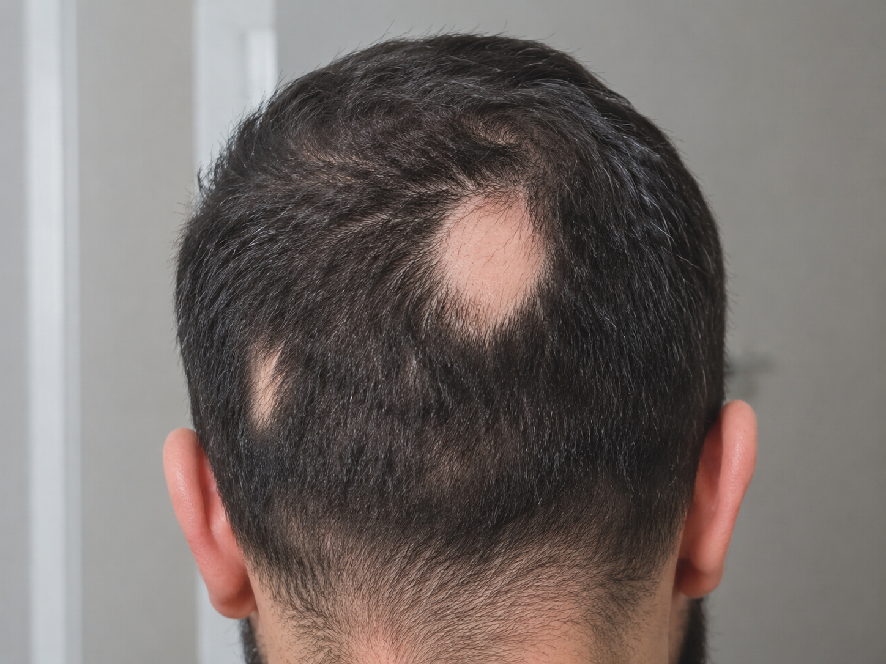

La pelade, ou alopecia areata, ne touche pas que les femmes. Chez l'homme, cette maladie auto-immune provoque une chute de cheveux en plaques, souvent brutale et imprévisible. Si l'impact psychologique est moins souvent exprimé, il est tout aussi réel. La micropigmentation capillaire offre une solution immédiate, non chirurgicale et naturelle pour camoufler les zones touchées et retrouver une apparence soignée.
Qu'est-ce que la pelade chez l'homme ?
La pelade est une maladie auto-immune dans laquelle le système immunitaire attaque les follicules pileux, provoquant une chute de cheveux localisée en plaques rondes ou ovales. Elle peut apparaître à n'importe quel âge et touche environ 2 % de la population mondiale, hommes et femmes confondus.
Son évolution est imprévisible : les plaques peuvent se stabiliser, s'agrandir, fusionner ou disparaître spontanément. Dans les formes les plus sévères, elle peut évoluer vers une pelade totale (perte de tous les cheveux) ou universelle (perte de tous les poils du corps).
Chez l'homme, la pelade vient souvent s'ajouter à une calvitie préexistante, rendant le résultat encore plus difficile à assumer au quotidien. Pourtant, il existe des solutions concrètes et efficaces.
Pourquoi la micropigmentation est-elle adaptée à la pelade chez l'homme ?
La micropigmentation capillaire ne fait pas repousser les cheveux, mais elle recrée visuellement l'apparence de follicules pileux rasés dans les zones touchées. Le résultat est un camouflage naturel, durable et indétectable.
- Camouflage immédiat des plaques : dès la première séance, les zones dégarnis se fondent dans le reste du crâne.
- Résultat naturel : les micro-points reproduisent fidèlement l'aspect de cheveux rasés, adaptés à votre teinte et votre carnation.
- Non invasif : aucune chirurgie, aucune anesthésie générale, aucune convalescence.
- Pigments certifiés : les pigments utilisés sont bio-résorbables et ne vireront jamais au vert ou au bleu.
Effet crâne rasé ou densification : quelle option selon votre situation ?
Selon l'étendue de la pelade et vos préférences, deux approches sont possibles :
- La densification capillaire : si les plaques sont limitées et que vous conservez une chevelure globalement fournie, le praticien dépose des micro-points dans les zones touchées pour uniformiser la densité. Le résultat se fond naturellement dans vos cheveux existants.
- L'effet crâne rasé : si la pelade est étendue ou associée à une calvitie avancée, cette option couvre l'intégralité du cuir chevelu d'un pigment homogène reproduisant l'aspect d'un crâne tondu de près. C'est souvent la solution la plus radicale et la plus satisfaisante pour les hommes à fort dégarni.
Lors de la consultation gratuite, votre praticien évalue votre situation et vous recommande l'approche la plus adaptée à votre profil.
Comment se déroule le traitement pour une pelade ?
Le traitement commence par une consultation gratuite : analyse des zones touchées, évaluation de la densité résiduelle, choix de la teinte et définition de l'approche technique.
Le traitement se déroule ensuite en 2 à 4 séances espacées de 10 à 20 jours, permettant au pigment de se fixer progressivement et d'affiner le rendu à chaque passage. La durée de chaque séance varie de 2 à 4 heures selon la surface à traiter.
La pelade peut-elle évoluer après le traitement ?
Oui. La pelade est une maladie évolutive et imprévisible. Si de nouvelles plaques apparaissent après le traitement, des retouches ciblées peuvent être réalisées. Chez MPC Clinique, si une séance supplémentaire est nécessaire pour maintenir le résultat suite à une évolution de la zone de la pelade traitée, elle n'est pas facturée en plus.
Pelade et calvitie androgénétique : peut-on traiter les deux en même temps ?
Oui, et c'est même fréquent. De nombreux hommes présentent à la fois une calvitie androgénétique (golfes, couronne, dégarni diffus) et des plaques de pelade. La micropigmentation traite les deux simultanément en une série de séances unifiée. Le résultat est un crâne uniformément pigmenté, sans que rien ne distingue les zones de calvitie des zones de pelade.
Pour en savoir plus sur le traitement de la calvitie androgénétique, consultez notre article dédié : Alopécie androgénétique et micropigmentation.
Vous souffrez de pelade et souhaitez retrouver un aspect naturel ?
Contactez-nous pour une consultation gratuite. Nos experts évaluent votre situation et vous proposent la solution la plus adaptée, sans engagement.
Je demande une consultation gratuite